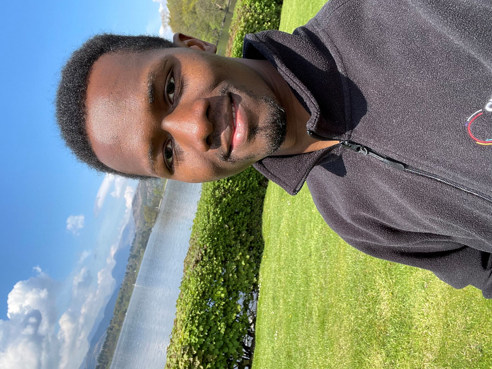

I am a **postdoctoral researcher in plant biology** in the [Mackinder Lab](https://mackinderlab.weebly.com/), interested in the resilience of photosynthetic organisms to environmental variations. My research focuses on the adaptive mechanisms of the green microalga *Chlamydomonas reinhardtii*, using an integrative approach that combines **physiology, molecular biology, genetics, and biochemistry**.

I have authored publications in leading journals including **Nature**, **Nature Communications**, **Plant Physiology**, and others, and I am recognized for my expertise in **plant physiology**. My work has been honored with **several scientific awards**.

You can explore more about my **publications**, **teaching**, and **CV** using the navigation menu.
